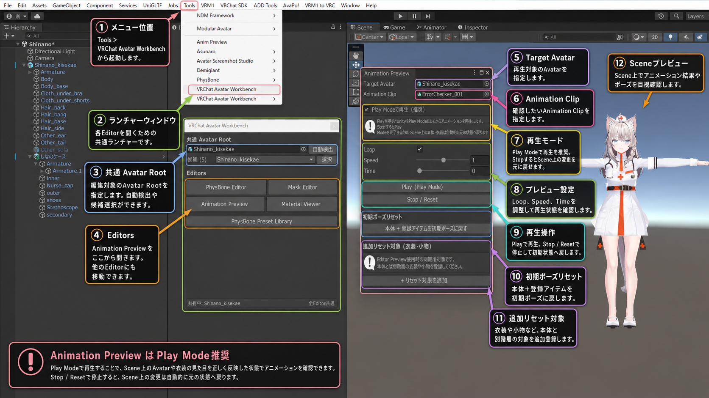

Animation / Pose Check
Animation Preview
Animation ClipをAvatarへ適用してScene上で確認するためのプレビューEditorです。Loop、Speed、Time操作と初期ポーズ復元をまとめています。

基本操作
- Target Avatarを指定。 共通Avatar Rootから自動的に引き継ぐこともできます。
- Animation Clipを指定。 確認したいClipをセットします。
- Play Modeで再生を有効。 通常はPlay Mode方式が推奨です。
- Loop / Speed / Timeを調整。 ループ再生、速度、任意フレーム位置を確認できます。
- Playで再生。 Scene上でポーズや衣装の挙動を確認します。
- Stop / Resetで停止。 Play Modeを終了し、Scene上の変更を元の状態へ戻します。
初期ポーズリセット
本体に加えて、別階層の衣装や小物を「追加リセット対象」に登録できます。Editor Preview使用時など、同期が崩れた場合の初期状態復元に利用します。
Play Mode再生では停止時にPlay Modeを終了するため、Scene上で発生した一時的な変更は自動的に破棄されます。